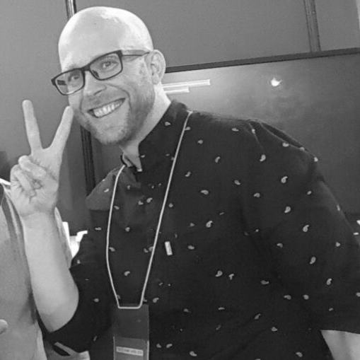
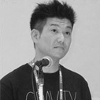

-Member of 2017 committee-
Selection of presenters will be conducted by following members of SOWN Screening Committee.

-
Journalist (Game, IT)
Tokyo VR Startups board member
Kiyoshi Shin
VR game company Yomune.co representative, Digital Hollywood University associate professor Born in 1970, He is Journalist (Video Game / IT) and the Founder and Director Emeritus of International Game Developers Association Japan (IGDA Japan). Currently he manage the VR developers' community which is his primary focus as of now. He published a book called "Shock of VR business Virtual reality bring up gigantic money"

-
Flowplay
Executive Producer
Juan Gril 氏
Joju Games Founder and Studio Manager Juan Gril has more than 18 years of experience developing casual games. Joju Games produces casual games for international clients including Dreamworks, MTV Networks, and Atari. Juan is Advisor for the Smartphone and Tablet Games Summit at GDC, co-chair of the IndieXchange program at Indiecade, and judge for the "Sense of Wonder Night" Game Festival at Tokyo Game Show.

-
Senior Researcher, Foundation for Multi-Media Communications (FMMC)
Associate Professor, Digital Hollywood University
Nobushige HICHIBE (Ph.D.)
Chair of SIG-INDIE at International Game Developers association Japan chapter. Doctoral degree recipient from Tokyo Institute of Technology by the dissertation of "Self-Production Culture as a Key to Growth of Japanese Game Industry”, which analyzes problems and solutions of the relations between the independent game development and the game industry of Japan by the social scientific method. Specialized in media research and cultural sociology.
- 
-
Kakehashi Games
Founder/Business Manager
Zach Huntley
Zach has over 20 years of experience in the video game industry where he has worked for Nintendo, Sega, LucasArts, CyberConnect2 and Unity in a variety of roles ranging from design to production to business development. Currently Zach is running Kakehashi Games which he co-founded in 2013 with the goal of helping western indie developers self-publish their titles in Japan. To date Kakehashi Games has helped release over 60 different titles across all major platforms including famous games such as The Banner Saga, Salt and Sanctuary, and Owlboy. Beyond SOWN, Zach is also a judge for the Independent Games Festival, Indie Megabooth, and Busan Indie Connect.

-
Shindenken
Circle head, Game Planner, Programmer
Isao Kitayama
Kitayama has established Shindenken in 2002. He has served Comic Market 20 times and has addressed Dorkbot, Sense of Wonder Night, and IGDA conference. He has developed more than 20 game titles including "I will be God of the Forest World", "Genius Scientist Bio Ruru", and "QUALIA". His game creation continues especially in the areas applied with AI technologies such as artificial life, and celluar automation.

-
Abylight
Publishing Manager
Ramon Naeval
Ramon began with videogames at 1992, at the age of 12 years old. Then he decided that this is the best medium for express himself. Has been writing for spanish media since 1999 (Onez, Ociojoven, Anaitgames, Eurogamer, Videoshock and Vandal) and has made games since 2003 (Nerlaska, Gameloft, Digital Legends, Abylight, U Play, Blit Software and A Crowd of Monsters). Appart from that he teaches about videogames in several universities, and is part of several videogames developer association.

-
Necrosoft Games
Director
Brandon Sheffield
Brandon Sheffield is director of indie game studio Necrosoft Games, former editor in chief of Game Developer magazine, and co-founder of the east bay game dev group, and multiple game jams. He occasionally still writes for Gamasutra.com as their senior contributing editor, and is an adviser to multiple game conferences and competitions, including GDC, Digital Dragons, Sense of Wonder Night, Pixel Heaven, and GDC China. He likes connecting people, making weird things, living in Oakland, and speaking at game conferences in exotic places.
- 
-
Sony Interactive Entertainment Japan Asia
Manager, Strategic Planning Dept.
Koji Tada
Koji joined SCE in 1994 and has produced multiple titles for PlayStation® as a director. He managed Motion Capture Studio and Sound Team, then engaged in production of several game titles as a producer from 2000. Since 2013 he had been in charge of developer relation of Asia region in SCE. Currently he manages the projects of PlayStation®VR.
-
NPO OcuFes
Kenji Takahashi
Kenji joined KOEI in 1998 and had engaged in Dynasty Warriors 1 -4 series. In 2008 he joined Creatures Inc. to be a director of PokePark. 2013 was the year he got OculusRift DK1 as a kickstarter, then he started OcuFes（current Japan VR Fest) as release event of VR softwware. He became independent as a VR professional and incorporated OcuFes in 2014. He is actively in charge of VR promotion in Japan and trailblazing work for VR business development internationally.